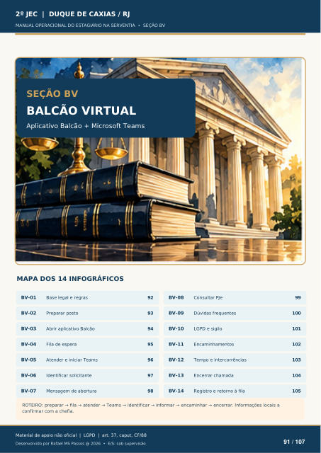

Texto da camada original do PDF
BALCÃO VIRTUAL
Aplicativo Balcão + Microsoft Teams
MAPA DOS 14 INFOGRÁFICOS
BV-01 Base legal e regras
92
BV-02
Preparar posto
93
BV-03
Abrir aplicativo Balcão
94
BV-04
Fila de espera
95
BV-05
Atender e iniciar Teams
96
BV-06
Identificar solicitante
97
BV-07
Mensagem de abertura
98
BV-08
Consultar PJe
99
BV-09
Dúvidas frequentes 100 BV-10 LGPD e sigilo 101 BV-11 Encaminhamentos
102 BV-12 Tempo e intercorrências 103 BV-13 Encerrar chamada 104 BV-14 Registro e retorno à fila 105 ROTEIRO: preparar → fila → atender → Teams → identificar → informar → encaminhar → encerrar. Informações locais a confirmar com a chefia.
Ver também o infográfico original (página 91)
